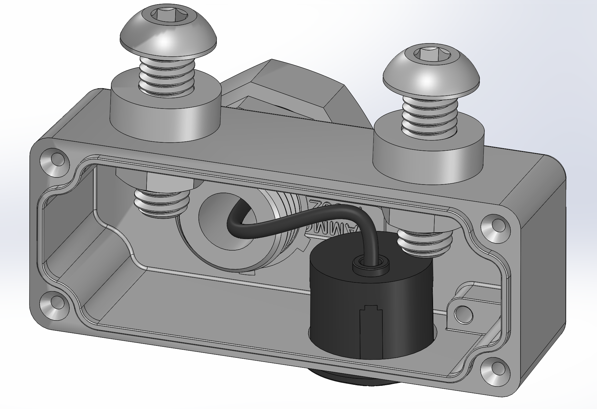
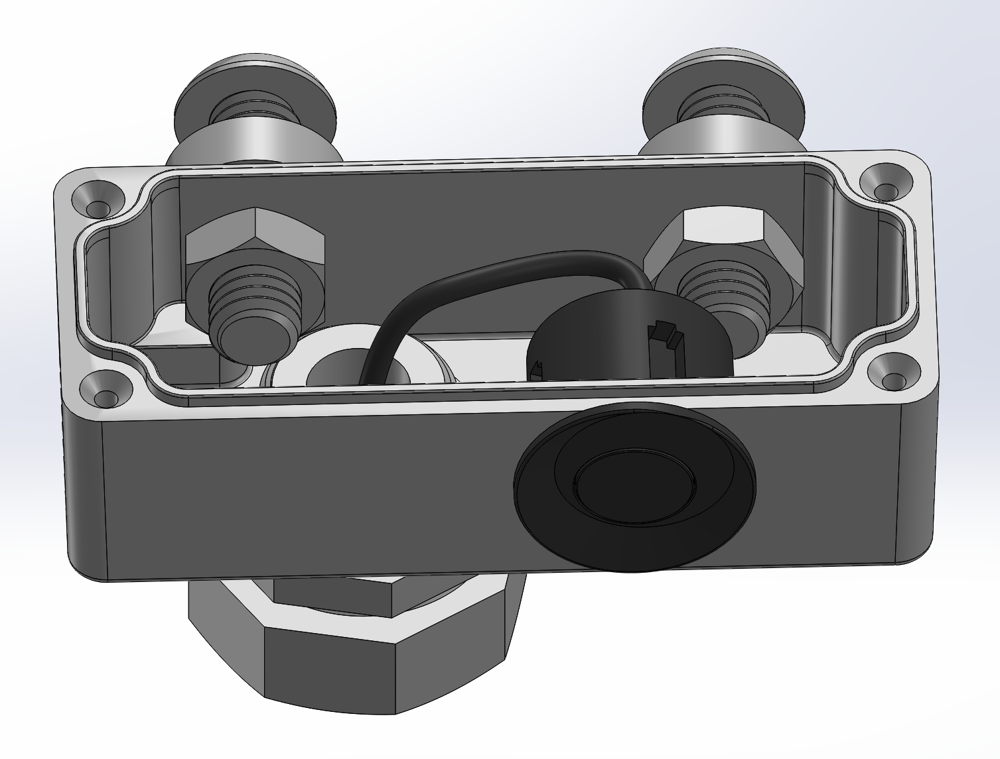
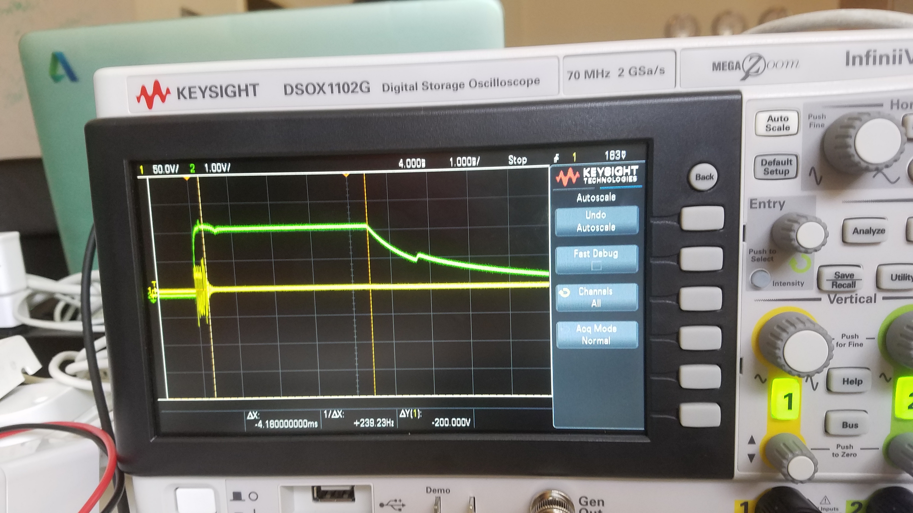
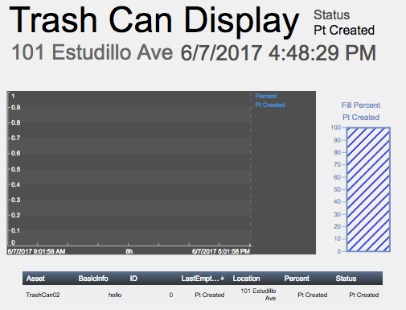
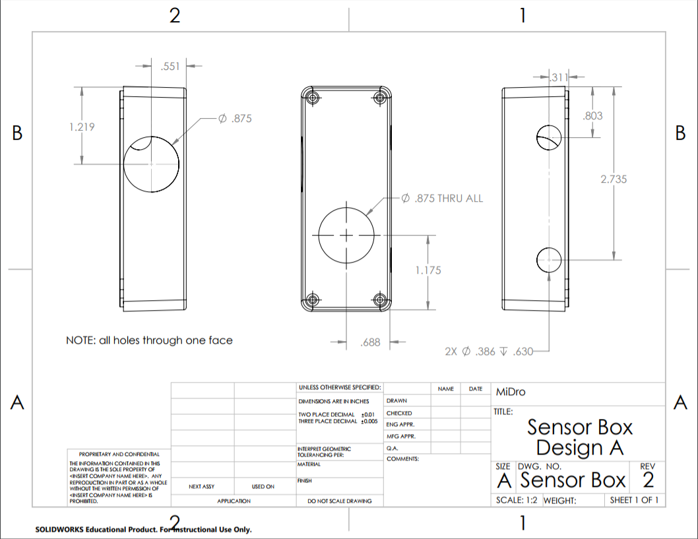
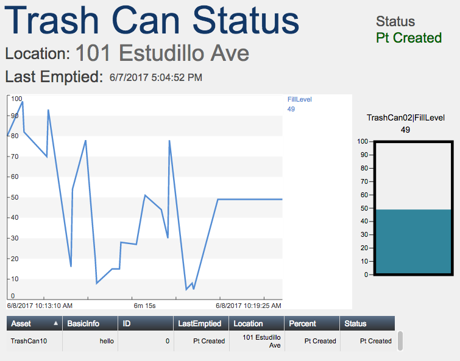

In researching different sensor options, today we analyzed the reverse car sensor with a jsn-sr04t pcb. This seems to be a good option because it is already weather resistant and the pcb allows us to measure the distance accurately. In testing, we found that sensor has a minimum detection distance at 19cm but we concluded that the trash can would be considered full at this level anyway. We also worked on running all three sensors in a trash can with one pcb to save space and resources.
Although the pins of the pcb is Vcc, Trig, Echo, and GND (the same as the HC-SR04 studied earlier), there is only one transceiver transducer used as the ultrasonic transmitter AND receiver. Two wires connect the transceiver to the pcb. We used an oscilloscope to observe the wire signals and observed one wire sends 8 pulses of a 40kHz square wave while the other wire goes HIGH when the pulses begin and LOW when the pulses echo back. Since both wires are important and the pulse wave is high voltage (-65V to 45V), we researched relay switches to turn the sensors on, one at a time.
Additionally, CAD drawings were made to visualize what the housings would look like.
 On the software side, we created a model template for displaying the trash can data. We struggled with the PUSH and POST for the server.
We did more research on different wire housings today. Conduits seem to be the most promising option as they provide enough flexibility and are waterproof. Also, more CAD design was done on the enclosure in order to 3D print it in the future.
Further testing with the reverse car sensors gave us more insight on what the wires within each sensor do. We noted that the green channel has a corner turn-down (where the green line intersects the vertical orange line in the image above) at the point in time at which the pulse returns to the sensor.
We also received several relays to play with! We hooked up a 5VD PDT relay to an oscilloscope (outputting a sin wave), connected a protection diode in parallel with the inductor within the relay, and observed its behavior. Although the relay was specified to be 5V, when the relay was supplied with ~3V we could hear and see on the oscilloscope that the switch within the relay had closed. When we decreased the voltage supplied to the relay, the switch opened at ~1V. We also began to think about how we can use relays to turn each of our three sensors (per trash can) on and off, and what the most optimal setup would be.
The software team finished up server configuration. They obtained the ability to archive data while also being able to write access to the server.
On the software side, several scripts were created to delete and create PI points and elements using the PI Web API. The software engineers got more familiar with the REST API and are debugging small problems with the visualization software. We are now able to create the 40 trash can elements in the PI server and update them accordingly. We were succesful in creating and deleting test points. We have a sample of one detailed trashcan created as shown below using PI Vision. We also have a less detailed version that will show the fills of all 40 trash cans. The visualization tools may not be up to par for our needs, so we will design our in-house custom solutions.
On the engineering side, we received the housing for the sensors from McMaster-Carr, which we drilled custom holes using a CNC machine at the PhaseSpace Cave. The engineers also searched fro different tubing methods for wiring the sensors. We also have CAD drawings for the drilled parts within specifications for the small enclosure.
Today, we also measured the range of the car distance sensors. We found that they have a 20 degree half angle, which has a wider sweep than the HC204 (~15 degree half angle). This may be problematic because the sensor detects the edge of the trash cans. To fix this problem, we can angle the sensors, so it does not detect the walls.
We are still waiting for a solid trash can model and a module for the network connection. This is limiting our engineering time.
We also have a team logo for Midro now courtesy of Sati's epic design skills~
The software has been progressing nicely. Currently, all parts of the PI software that is being used has been completed. A python script can create trashcans and PI points, and then update attributes of the trashcans with provided data. The data is randomly generated now, so the team will have to tie this in when it becomes available. Below is one of our attempts to visualize the data. This will allow anyone who works on or wants to see the trashcan data to not have to look at unappealing tables. The aforementioned picture was created using OSISoft's PI Vision, which already interfaces with the PI AF Server that we set up earlier. PI Vision is an easy start up solution as it automatically updates data from the server and allows the user to switch and create different vies easily. However, we want more freedom in how we customize and display data, and will therefore explore different approaches.
On the engineering side, we finished the circuity we've been working on for the past few days. We hooked up all three reverse car sensors to one of the provided PCB boards by using two relays. Below, you can see our proof of concept in which we had LEDs in place of the sensors. The leftmost relay either switches on the LED or switches to the relay on the right. This relay then switches between the two LEDs connected to it. After we established that the relay circuit was working with LEDs, we replaced the LEDs with the actual car sensors. Thus, we are able to take measurements from each car sensor at different times.
We have decided to use the ultrasonic car sensor since it is cheap, durable, and waterproof. It comes with an PCB that we can easily integrate into our microcontroller. However, the majority of our housing design was based off of the HCSR-04 transceiver. As mentioned before, the only relevant difference between the two is that the car sensor has a 20 degree sweep whereas the transceiver has a 15 degree sweep. While it may seem that a larger sweep would be better, in our case, a larger sweep means that we might read the walls of the trash can, giving us incorrect readings. Instead of angling the sensors away from the walls, another intuitive solution to this problem is to reduce the sweep angle of the sensor.
We designed casings for the sensor that would reduce the sweep, one with a cylinder, the other with a cone. Unfortunately, the material we used, PLA, bounced the signal around, creating a lot of noise and eventually increased the range of the sensor, returning odd results in the process. We heard back from our client at San Leandro Improvement Association, and found out that the lid of the trash can is convex upward. This means that the sensors will point away from the walls during installation, but we cannot test this without an actual model. So now, we wait.
The software team's website will be a written-from-scratch alternative to OSISoft's PI Vision. It will have all of the functionality of PI Vision, but will be tailored to our project specifically. Ideally, we would be able to implement anything we would need in the software, which might not be possible with PI Vision. It will be open-source, therefore open for everyone to improve.